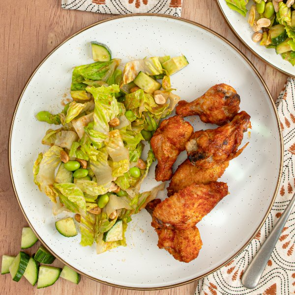

Thai Red Curry Wings with Romaine, Cucumber, Edamame & Peanut Salad

Total Time
40 min
Nutrition (per serving)
617 kcalCalories
38.7 gProtein
26.6 gCarbs
40.8 gFat
Full nutrition table
| Calories | 617 kcal |
| Total fat | 40.8 g |
| Saturated fat | 9.2 g |
| Trans fat | 0.1 g |
| Cholesterol | 156.5 mg |
| Sodium | 921.9 mg |
| Carbohydrates | 26.6 g |
| Fiber | 7 g |
| Sugars | 10 g |
| Protein | 38.7 g |
| Potassium | 938 mg |
| Calcium | 98.6 mg |
| Iron | 3.2 mg |
| Vitamin A | 5210.1 IU |
| Vitamin C | 7.5 mg |
| Vitamin D | 6.8 IU |
Cookware
Ingredients
- 2 lbchicken wings, split with tips removed
- 1 ⅓ cupsedamame
- 1English cucumber
- ½ cuppeanut sauce
- ½ cuppeanuts, roasted unsalted
- 2 heartsromaine hearts
- 45 mlThai curry paste, red
- black pepper
- cornstarch
- rice vinegar
- salt
- toasted sesame oil
Steps
- Preheat oven to 500°F. Coat a large baking sheet pan with a thin layer of oil.2 tsp toasted sesame oil
- Pat chicken wings dry with paper towels and place in a medium bowl. Sprinkle with cornstarch, salt, and pepper, then toss to coat. Transfer to the baking sheet and spread out in an even layer.2 lb chicken wings, split with tips removed
4 tsp cornstarch
½ tsp salt
¼ tsp black pepper - Place baking sheet in the oven (it doesn't have to be fully heated) and bake, turning once, until wings are cooked through, 20-25 minutes.
- Meanwhile, place curry paste, water, vinegar, and oil in a clean medium bowl. Stir to combine the wing sauce and set aside.3 tbsp Thai curry paste, red
4 tsp water
2 tsp rice vinegar
2 tsp toasted sesame oil - Wash, dry, trim and quarter cucumber lengthwise, then cut crosswise into bite-sized pieces. Place in another clean medium bowl.1 English cucumber
- Wash, dry, and chop (or tear) lettuce into bite-sized pieces. Add to the bowl with the cucumber.2 hearts romaine hearts
- Place edamame in a colander and rinse under hot, running water (from the tap) to defrost; add to the bowl with the salad, along with the peanuts, and set aside.1 ⅓ cups edamame
½ cup peanuts, roasted unsalted - When the wings are done, remove from oven and add to the bowl with the wing sauce. Toss to coat.
- Add peanut sauce to the bowl with the salad and toss to combine.½ cup peanut sauce
- To serve, divide wings and salad between plates. Enjoy!